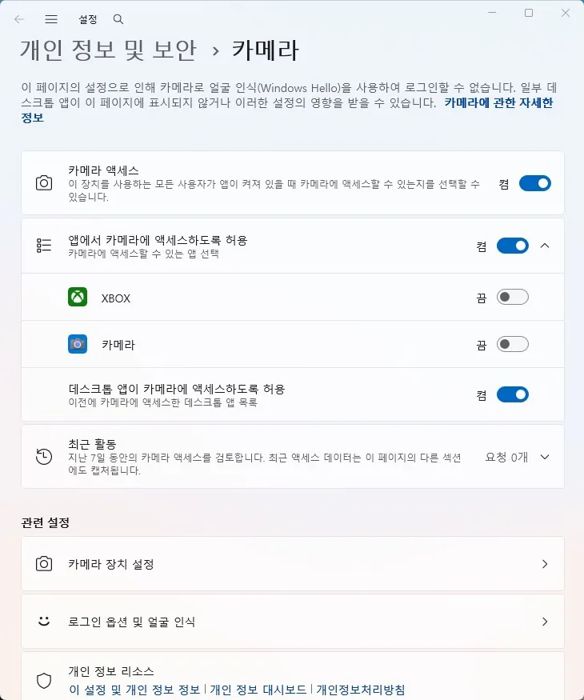

주변장치
웹캠 인식 안 됨 원인과 점검 순서
웹캠이 인식되지 않거나 화상 프로그램에서 화면이 나오지 않는 경우
웹캠 인식 문제는 하드웨어 고장보다 Windows 카메라 권한, 다른 프로그램의 장치 점유, USB 연결 문제인 경우가 대부분입니다. Windows 기본 카메라 앱에서 먼저 웹캠이 보이는지 확인하는 것이 가장 빠른 구분법입니다.
카메라 앱에서는 정상적으로 보이는데 화상회의 프로그램에서만 안 된다면, 다른 프로그램이 이미 웹캠을 사용 중이거나 그 프로그램의 카메라 장치 설정이 다르게 지정된 경우가 많습니다. 웹캠은 대부분 한 번에 하나의 프로그램만 사용할 수 있습니다.
카메라 앱에서조차 전혀 반응이 없다면 개인정보 보호 설정에서 카메라 접근이 꺼져 있거나, USB 연결 자체의 문제, 또는 드라이버 문제일 가능성을 봐야 합니다.
이 가이드가 필요한 상황
- 장치 관리자에 카메라 자체가 보이지 않는다.
- USB에 연결해도 인식음이 나지 않는다.
- Windows 기본 카메라 앱에서도 화면이 나오지 않는다.
먼저 확인할 항목
- 카메라 접근 권한 확인 — 설정 > 개인정보 및 보안 > 카메라에서 '카메라 접근'과 사용 중인 앱의 권한을 켜세요.

카메라 화면. 카메라 액세스와 앱에서 카메라에 액세스하도록 허용이 켜져 있고, 데스크톱 앱의 카메라 액세스도 허용되어 있다" loading="lazy" width="730" height="875" class="guide-image"> - Windows 기본 카메라 앱으로 선(先) 테스트 — 시작 메뉴에서 '카메라' 앱을 열어 화면이 나오는지 확인하세요. 여기서도 안 되면 시스템 쪽 문제입니다.
- 다른 프로그램의 웹캠 점유 확인 — 사용하지 않는 화상회의·방송 프로그램을 모두 종료한 뒤 다시 시도하세요.
- USB 연결 방식 확인 — USB 허브 없이 본체·노트북의 USB 포트에 직접 연결해 비교하세요.
원인을 더 정확히 나누는 방법
카메라 앱은 되는데 화상회의 프로그램만 안 될 때
웹캠 자체와 Windows 인식은 정상이라는 뜻이므로, 해당 프로그램의 카메라 장치 설정에서 다른 장치가 선택되어 있거나 다른 프로그램이 웹캠을 점유하고 있는지 확인하세요.
노트북 내장 카메라가 물리적으로 꺼져 있는 경우
일부 노트북은 개인정보 보호를 위한 물리적 셔터나 Fn 단축키로 카메라를 꺼둘 수 있습니다. 키보드에 카메라 아이콘이 있는 기능키를 확인하세요.
확인 결과에 따른 다음 단계
- 카메라 앱에서도 화면이 안 나올 때 — 권한·드라이버·USB 연결을 순서대로 확인하고, 그래도 안 되면 다른 컴퓨터에 연결해 하드웨어 고장 여부를 구분하세요.
- 카메라 앱은 되는데 특정 프로그램만 안 될 때 — 그 프로그램의 카메라 설정과 다른 프로그램의 웹캠 점유 여부만 확인하면 대부분 해결됩니다.
피해야 할 실수
- 다른 프로그램의 웹캠 점유 확인 없이 바로 드라이버를 재설치하는 것
- 카메라 앱 테스트 없이 바로 웹캠을 교체 구매하는 것
자주 묻는 질문
- 온라인 시험·화상수업에서만 웹캠이 안 잡히면요? 브라우저의 카메라 권한을 별도로 확인해야 합니다. 브라우저 주소창 왼쪽의 자물쇠 아이콘을 눌러 카메라 권한이 허용되어 있는지 확인하세요.
- 웹캠 LED는 켜지는데 화면이 안 나오면요? LED는 전원 공급만으로도 켜질 수 있어 정상 작동의 증거가 아닙니다. Windows 기본 카메라 앱에서 실제 화면이 나오는지 확인하세요.
- USB 허브에 꽂으면 계속 인식이 끊기면요? 허브의 전력 공급이 부족한 경우가 많습니다. 전원이 별도로 공급되는 유전원 허브를 사용하거나 본체에 직접 연결하세요.
최종 검토일: 2026-08-07